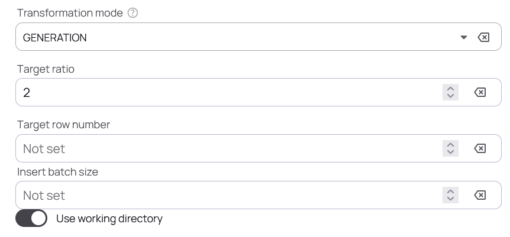
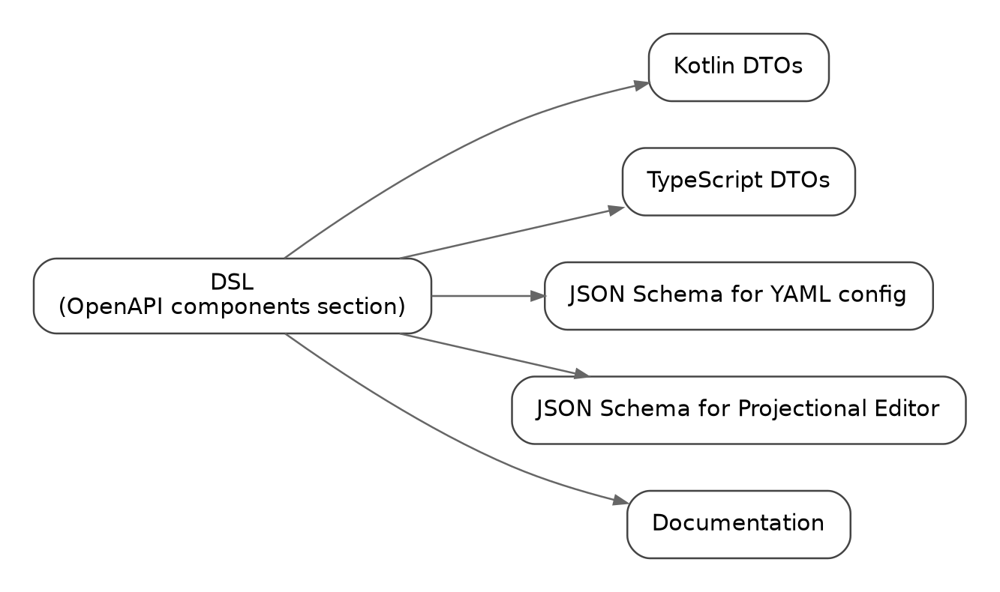
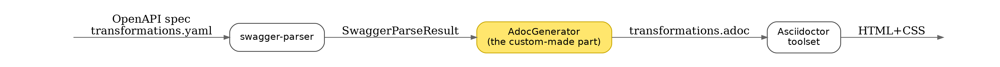
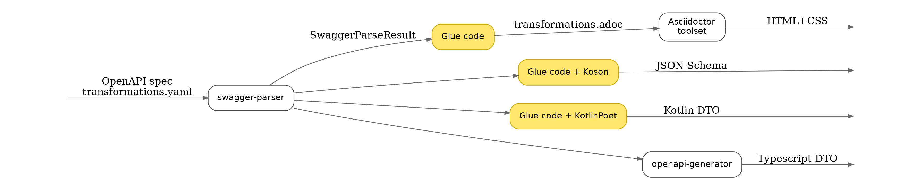
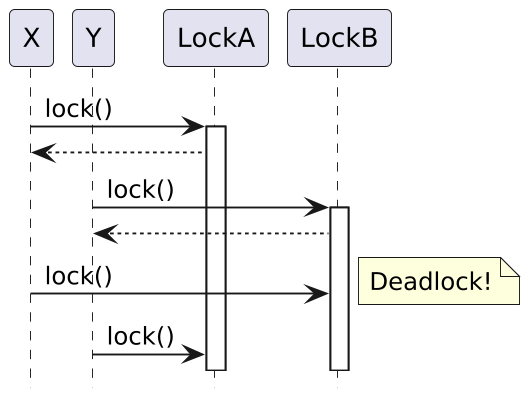
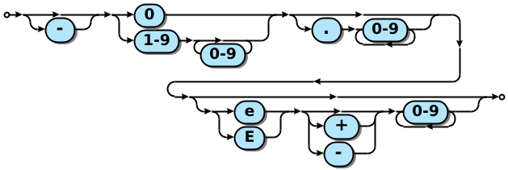
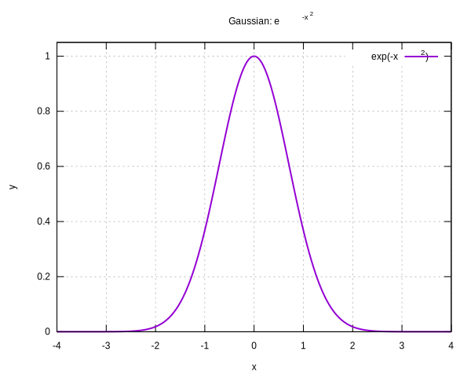
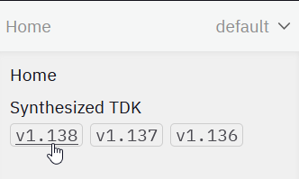

ContinuousGeneratorParams:
title: Continuous generator
nullable: false
allOf:
- $ref: "#/components/schemas/TransformationParams"
- type: object
description: >
Output data is sampled from a parameterised continuous distribution. [...]
properties:
mean:
description: Mean of the sampled distribution
type: number
format: double
nullable: true
std:
description: Standard Deviation
[...]
min:
[...]
max:
[...]
numeric_type:
$ref: '#/components/schemas/NumericType'
[...]Automating Documentation
From DSL to Dynamic Docs with Asciidoctor and Antora
Ivan Ponomarev
 | Ivan Ponomarev
|
The product we document
Transforms and generates data in relational databases
At its core, it includes ~35 transformers/generators, for example:
Random number generator
Person generator (gender, age, name, etc.)
Categorical generator (randomly selects one value from a predefined list)
…and more
What we document
The transformation/generation process can be configured via:
A YAML file
A UI (projectional editor)
The product evolves over time:
New transformers are added
Existing transformers change and gain new capabilities
Things that must stay in sync
|  |
Things that must stay in sync
|  |
Things that must stay in sync
|  |
DSL as a source of truth to the rescue

Example DSL fragment
Typenames, structure, nullability, descriptions — all in one place:
Why OpenAPI spec as DSL?
It has built-in documentation fields (
description,title).It supports non-standard extension attributes via
x-…fields.
For example, we usex-extends: java.io.Serializableto make the code generator emit aSerializableclass.There is a high-quality, widely used OpenAPI parser for the JVM:
https://github.com/swagger-api/swagger-parser
Why OpenAPI spec as DSL?
We already had code generators for Kotlin and TypeScript.
The remaining step was to generate Asciidoctor from the same source, and then rely on the Asciidoctor toolchain for everything that follows.

Note: It’s much easier to generate semantic markup language such as Asciidoctor
than trying to generate HTML!
DSL Pipeline: full picture

DSL: conclusions
DSL as a single source of truth helps keep multiple parts of the product in sync — including (but not limited to) the documentation.
The choice of DSL approach is context-dependent, possible options are:
a fully custom DSL,
an existing spec language (e.g., OpenAPI or XSD),
a YAML/XML-based format,
an internal DSL in a host language such as Ruby or Kotlin.
The best results usually come from choosing a technology with strong out-of-the-box tooling, so you only need a small amount of custom “glue” code.
Why Asciidoctor? Why not reStructuredText or Markdown?
Richer semantics out of the box: notes, callouts, quotes, and more
Powerful tables: merged cells, advanced layouts impossible elsewhere
Attributes and conditional content:
(:product:,:version:,ifdef::[],ifeval::[])
make documentation a configurable build artefactCountless diagram-as-code integrations: you can keep rich, colorful illustrations in plain text (Graphviz, PlantUML, Mermaid, Gnuplot, JSyntrax etc.)
Truly cross-platform: Ruby developer? JavaScript developer? JVM developer? — there’s native tooling for you!
My favorite feature:
include::…[]
Complex tables
| Document | Responsible | Ready |
|---|---|---|
D documents | ||
D.1 |
| ✓ |
D.2 | ✕ | |
D.3 |
| ✓ |
E documents | ||
… | ||
RST, MD — only with extensions and tricks or resorting to raw HTML
Code snippets with syntax highlighting
[source,java]
----
private static long gcd(long a, long b) {
return b == 0 ? Math.abs(a) : //<.>
gcd(b, a % b); //<.>
}
----private static long gcd(long a, long b) {
return b == 0 ? Math.abs(a) : (1)
gcd(b, a % b); (2)
}| 1 | base case to stop recursion |
| 2 | Euclid’s step: reduce the problem size and recurse |
Code snippets with syntax highlighting
[source,ruby]
----
def self.gcd(a, b)
b == 0 ? a.abs : # <.>
gcd(b, a % b) # <.>
end
---- def self.gcd(a, b)
b == 0 ? a.abs : (1)
gcd(b, a % b) (2)
end| 1 | base case to stop recursion |
| 2 | Euclid’s step: reduce the problem size and recurse |
Code snippets with syntax highlighting
[source,lua]
----
function gcd(a,b)
if b==0 then return math.abs(a) end -- <.>
return gcd(b, a % b) -- <.>
end
----function gcd(a,b)
if b==0 then return math.abs(a) end (1)
return gcd(b, a % b) (2)
end| 1 | base case to stop recursion |
| 2 | Euclid’s step: reduce the problem size and recurse |
Code snippets with syntax highlighting
[source,prolog]
----
gcd(A,B,G) :- A1 is abs(A), B1 is abs(B), gcd0(A1,B1,G).
gcd0(A,0,A). % <.>
gcd0(A,B,G) :- B \= 0, R is A mod B, gcd0(B,R,G). % <.>
----gcd(A,B,G) :- A1 is abs(A), B1 is abs(B), gcd0(A1,B1,G).
gcd0(A,0,A). % (1)
gcd0(A,B,G) :- B \= 0, R is A mod B, gcd0(B,R,G). % (2)| 1 | base case to stop recursion |
| 2 | Euclid’s step: reduce the problem size and recurse |
Graphviz
|  |
PlantUML
|  |
JSyntrax
|  |
Gnuplot
|  |
LaTeX-compatible formulae
[stem]
++++
\Huge
\int^{\infty}_{-\infty} e^{-x^{2}} dx = \sqrt{\pi}
++++\[\Huge
\int^{\infty}_{-\infty} e^{-x^{2}} dx = \sqrt{\pi}\]
include:: directive — my favourite feature of Asciidoctor
[source,java]
----
include::../java/org/example/WordCounter.java[]
----package org.example;
import java.util.Map;
import java.util.Objects;
import java.util.stream.Collectors;
import java.util.stream.Stream;
// tag::static_imports[]
import static java.util.Arrays.stream;
import static java.util.function.Function.identity;
import static java.util.stream.Collectors.counting;
// end::static_imports[]
public class WordCounter {
public static Map<String, Long> countWords(Stream<String> lines) {
return lines.
// tag::pipeline[] @formatter:off
filter(Objects::nonNull)
.flatMap(line -> stream(line.split("[^A-Za-z0-9']+")))
.filter(word -> !word.isEmpty())
.map(String::toLowerCase)
.collect(Collectors.groupingBy(identity(), counting()));
// end::pipeline[] @formatter:on
}
}When we need to include only the specific snippet
This Java Streams API pipeline converts a
Stream<String>of text lines into aMap<String, Long>mapping each lowercased word to the number of times it occurs in the input.
include::../java/org/example/WordCounter.java[tag=pipeline]filter(Objects::nonNull)
.flatMap(line -> stream(line.split("[^A-Za-z0-9']+")))
.filter(word -> !word.isEmpty())
.map(String::toLowerCase)
.collect(Collectors.groupingBy(identity(), counting()));How do we make sure this claim is accurate? We need a test!
The test that verifies the pipeline…
include::../../test/java/org/example/WordCounterTest.java[]package org.example;
import org.junit.jupiter.api.Test;
import java.util.Map;
import java.util.stream.Stream;
import static org.assertj.core.api.Assertions.assertThat;
class WordCounterTest {
@Test
void countsWordsAcrossMultipleLines_caseInsensitive_andIgnoresPunctuation() {
// tag::test[]
assertThat(WordCounter.countWords(Stream.of(
"Asciidoctor makes docs-as-code: write, build, publish.",
"ASCIIDOCTOR makes Docs-as-Code; write—build—publish!"
))).isEqualTo(Map.of(
"asciidoctor", 2L,
"makes", 2L,
"docs", 2L,
"as", 2L,
"code", 2L,
"write", 2L,
"build", 2L,
"publish", 2L
));
// end::test[]
}
@Test
void handlesEmptyAndNullLinesGracefully() {
Stream<String> lines = Stream.of("", null, " ", "One two two");
Map<String, Long> result = WordCounter.countWords(lines);
assertThat(result).isEqualTo(Map.of(
"one", 1L, "two", 2L
));
assertThat(result.size()).isEqualTo(2);
}
}The test that verifies the pipeline…
include::../../test/java/org/example/WordCounterTest.java[tag=test] assertThat(WordCounter.countWords(Stream.of(
"Asciidoctor makes docs-as-code: write, build, publish.",
"ASCIIDOCTOR makes Docs-as-Code; write—build—publish!"
))).isEqualTo(Map.of(
"asciidoctor", 2L,
"makes", 2L,
"docs", 2L,
"as", 2L,
"code", 2L,
"write", 2L,
"build", 2L,
"publish", 2L
));How to make your Asciidoctor code snippets testable
Keep documentation and tested example code in the same repository
Use
include::[…]withtag=to pull in only the relevant fragmentsBuild the docs and run the example-code tests in the same CI pipeline.
If the example breaks → the test breaks → CI fails.
Why Antora?
Versioned docs are a first-class concept

content:
sources:
- url: ./testing-suite
start_path: docs
branches: [release-v1.138.0, release-v1.137.0, release-v1.136.0]Why Antora?
Opinionated layout for modules, assets, examples, etc
+ coordinate-based xrefs (component/version/module/page)
A typical module layout:
user_guide
├───assets
│ └───images
├───examples
│ └───sql
├───pages
└───partials// Antora style references
include::user_guide:example$data_insertion.sql[tag=snippet]
image::user_guide:yamlview.png[]
xref:user_guide:020_getting_started/datasources.adoc[Data sources]Why Antora?
It’s really fast!

When possibly NOT Antora?
Too opinionated, too Git-centric, too many nested folders — not for novices
Moving sections around is not an easy task
When a large part of your documentation is descriptive narrative, not necessarily tightly coupled with versioning and releases
Conclusions
Keep documentation close to your source of truth
Generate documents in plain adoc — let Asciidoctor toolset do the rest
Use the Asciidoctor’s
include::magic in order to include testable examplesDocs + Code = Love!